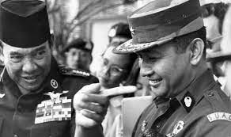
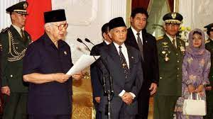
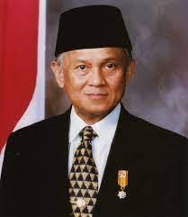
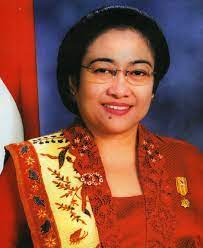
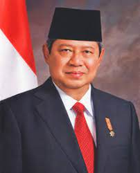
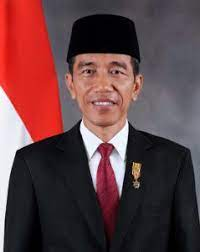

1. LATAR BELAKANG Banyaknya deviasi yang terjadi selama masa pemerintahan Orde Baru mengakibatkan Indonesia mengalami
krisis multidimensi, yang dimulai dengan krisis moneter yang terus berlanjut. Dampaknya, pemerintahan
Orde Baru di bawah kepemimpinan Presiden Soeharto terjerumus ke dalam tekanan politik yang berasal dari
dalam dan luar negeri. Komunitas internasional, khususnya Amerika Serikat, secara terang-terangan
menyerukan agar Soeharto mengundurkan diri dari jabatannya sebagai Presiden. 2. LENGSERNYA SOEHARTO 3. MASA REFORMASI 4. KARAKTERISTIK MASA REFORMASI 5. CIRI-CIRI DEMOKRASI PANCASILA 6. PRESIDEN-PRESIDEN PADA MASA REFORMASI


Puncaknya terjadi ketika sekitar 15.000 mahasiswa menduduki Gedung DPR/MPR. Namun, pada akhirnya, Presiden
Soeharto tidak memiliki opsi lain selain mundur dari jabatannya. Pada 21 Mei 1998, Soeharto mengumumkan
pengunduran dirinya sebagai Presiden di Istana Merdeka. Mengacu pada Pasal 8 UUD 1945, Soeharto segera
mengatur agar Wakil Presiden Habibie diambil sumpahnya sebagai penggantinya di hadapan Mahkamah Agung.
DPR tidak dapat berfungsi karena mahasiswa telah menduduki gedung DPR. Kepemimpinan Indonesia kemudian
dialihkan dari Soeharto kepada BJ Habibie. Langkah ini merupakan langkah baru untuk membuka proses
demokratisasi di Indonesia. Meskipun kontroversial secara hukum, pemerintahan Presiden BJ Habibie
berhasil bertahan selama satu tahun masa kepresidenannya.
Penerapan demokrasi dalam era reformasi (1998-sekarang) ditandai dengan turunnya Soeharto setelah
menjabat sebagai presiden selama 32 tahun. Presiden BJ Habibie membentuk dasar yang kokoh untuk
implementasi demokrasi di Indonesia pada periode berikutnya. Habibie menghilangkan berbagai
pembatasan terhadap demokrasi yang ada pada masa pemerintahan Soeharto.
Pada masa pemerintahan Presiden BJ Habibie, beberapa tanda pelaksanaan demokrasi di Indonesia
mulai muncul. Salah satunya adalah pemberian ruang kebebasan pers dalam era reformasi sebagai
wadah publik untuk berpartisipasi dalam urusan nasional dan pemerintahan negara. Selain itu,
dalam era reformasi, sistem multipartai diperkenalkan. Sebagai Presiden RI, Habibie membuka
peluang bagi rakyat untuk bergabung dan berkumpul sesuai dengan ideologi dan aspirasi politik
mereka.
❊ Pemilu lebih demokratis
Pemilihan umum dilakukan dengan cara yang jauh lebih demokratis daripada sebelumnya. Rakyat memiliki hak langsung
untuk memilih perwakilannya di lembaga legislatif, serta presiden, wakil presiden, dan kepala daerah.
❊ Rotasi kekuasaan dari pemerintah pusat hingga daerah
Rotasi kekuasaan dilaksanakan dari mulai pemerintahan pusat sampai pada tingkat desa. Presiden dan kepala daerah
hanya bisa menjabat maksimal dua periode.
❊ Pola rekrutmen politik terbuka
Proses seleksi politik untuk pengisian jabatan politik dilakukan secara transparan, di mana setiap warga negara
yang berkualifikasi memiliki kesempatan yang sama untuk menjabat tanpa adanya diskriminasi.
❊ Hak-hak dasar warga negara terjamin
Hak-hak dasar rakyat terjamin, termasuk kebebasan berpendapat, berorganisasi, kebebasan pers, dan lain sebagainya.
✿ Kedaulatan Rakyat :
Kekuasaan politik berada di tangannya rakya melalui pemilihan umum yang demokratis.
✿ Keberagaman dan tolrenasi yang baik :
Mengakui dan mendorong toleransi terhadap keberagaman sosial, budaya, dan agama di Indonesia.
✿ Gotong Royong :
Kerja sama yang dilakukan antar 2 pihak atau lebih.
✿ Perlindungan Hak Asasi Manusia :
Menempatkan pentingnya perlindungan hak asasi manusia, termasuk hak atas kebebasan berpendapat dan beragama.
✿ Partisipasi publik :
Mendorong partisipasi aktif masyarakat dalam proses politik dan pengambilan keputusan.
❀ BJ Habibie (1998–1999)

Setelah Soeharto mengundurkan diri, B.J. Habibie, yang menjadi Wakil Presiden, naik jabatan menjadi
Presiden dan menginisiasi serangkaian reformasi politik. Pada bulan Februari 1999, dia menyetujui
Undang-Undang Partai Politik yang menghapus batasan jumlah partai politik (parpol), yang sebelumnya
terbatas hanya pada tiga parpol.
Pada bulan Mei 1999, Habibie mengesahkan Undang-Undang Otonomi Daerah sebagai langkah awal menuju
desentralisasi pemerintahan Indonesia, memungkinkan provinsi-provinsi untuk mengatur diri mereka
sendiri dengan lebih leluasa. Di bawah pemerintahan Habibie, kebebasan pers meningkat, meskipun
Kementerian Penerangan tetap ada. Beberapa tahanan politik seperti Sri Bintang Pamungkas, Muchtar
Pakpahan, dan Xanana Gusmão juga dibebaskan atas perintahnya.
Era pemerintahan Habibie juga ditandai dengan diselenggarakannya pemilihan umum 1999, yang merupakan
pemilihan bebas pertama sejak pemilu 1955. Proses pemilu ini diawasi oleh Komisi Pemilihan Umum (KPU)
yang independen, bukan oleh komisi pemilihan yang diangkat oleh menteri-menteri pemerintah seperti
pada masa Orde Baru.
Lalu,Habibie menyerukan referendum untuk menentukan masa depan Timor Timur. Tindakan ini mengejutkan
dan membuat marah beberapa pihak. Pada tanggal 30 Agustus, penduduk Timor Timur memilih untuk merdeka,
yang merugikan popularitas dan aliansi politik Habibie.

Dr. K.H. Abdurrahman Wahid, atau lebih dikenal dengan nama Gus Dur, adalah seorang politikus Indonesia dan pemimpin agama Islam yang menjabat sebagai presiden Indonesia ke-4, dari pemilu tahun 1999 hingga pemakzulannya pada tahun 2001. Kabinet pertamanya, Kabinet Persatuan Nasional, adalah kabinet koalisi yang mewakili berbagai partai politik, termasuk PDI-P, PKB, Golkar, PPP, PAN, dan PK. Reformasi administratif dilakukan dengan menghapuskan Kementerian Penerangan dan membubarkan Kementerian kesejahteraan yang dinilai korup pada masa Orde Baru.
Setelah menghabiskan satu bulan di Kabinet Persatuan Nasional, Menteri Koordinator Pengentasan Kemiskinan (Menko Taskin) Hamzah Haz mengumumkan pengunduran dirinya pada bulan November. Spekulasi muncul bahwa alasan di balik pengunduran dirinya adalah tuduhan dari Gus Dur terhadap beberapa anggota kabinet yang terlibat dalam korupsi ketika masih berada di Amerika Serikat. Beberapa orang juga berspekulasi bahwa pengunduran diri Hamzah Haz terkait dengan ketidaksenangannya terhadap pendekatan Gus Dur terhadap Israel.
Gus Dur memiliki rencana untuk memberikan referendum kepada Aceh dan mengadopsi pendekatan yang lebih lunak terhadap konflik di wilayah tersebut dengan mengurangi kehadiran personel militer di Negeri Serambi Mekkah tersebut.
Pada bulan Februari 2000, Gus Dur memulai upaya untuk meminta Jenderal Wiranto mengundurkan diri dari posisi Menteri Koordinator Bidang Politik dan Keamanan. Alasannya, menurut Wahid, adalah keterlibatan keduanya dalam kasus korupsi, meskipun bukti yang jelas tidak pernah disajikan oleh Gus Dur. Tindakan ini memperburuk hubungannya dengan Golkar dan PDI-P. Dua bulan berikutnya, pemerintah menandatangani nota kesepahaman dengan GAM, yang berlangsung hingga awal tahun 2001 sebelum kedua belah pihak melanggar kesepakatan. Gus Dur juga mengusulkan pencabutan TAP MPRS No. XXIX/MPR/1966 yang melarang paham Marxisme-Leninisme.
Dia juga berusaha memperbaiki hubungan dengan Israel, yang menyebabkan kemarahan di kalangan kelompok Muslim Indonesia. Isu ini menjadi perbincangan dalam pidato Ribbhi Awad, duta besar Palestina untuk Indonesia, kepada parlemen Palestina pada tahun 2000. Baik Gus Dur maupun menteri luar negerinya, Alwi Shihab, menolak penggambaran yang tidak tepat terhadap Presiden Indonesia, dan Alwi meminta agar Awad diganti dari jabatannya sebagai duta besar Palestina untuk Indonesia.
Gus Dur berupaya mereformasi militer dan mengurangi campur tangan militer dalam urusan sosial-politik. Dia mendapati sekutu dalam Agus Wirahadikusumah, yang diangkatnya sebagai Panglima Kostrad pada Maret. Namun, tekanan dari petinggi TNI membuatnya mundur dari keputusan tersebut. Hubungannya dengan TNI semakin memburuk saat Laskar Jihad tiba di Maluku dan diberi senjata oleh TNI. Meskipun meminta TNI menghentikan aksi Laskar Jihad, mereka berhasil sampai ke Maluku dan diberi senjata oleh TNI.
Pada akhir 2000, kekecewaan terhadap Abdurrahman Wahid tersebar di kalangan elit politik. Pada 1 Februari 2001, DPR mengancam akan memakzulkan Gus Dur dengan mengeluarkan nota. Namun, demonstran NU tetap mendukung Gus Dur, bersiap untuk mempertahankannya sebagai presiden. Pada 30 April, DPR mengeluarkan nota kedua untuk mengadakan Sidang Istimewa MPR pada 1 Agustus. Gus Dur mencoba membubarkan MPR/DPR, mengembalikan kedaulatan kepada rakyat, dan membekukan Partai Golkar, tetapi upaya ini tidak berhasil. Pada 23 Juli, MPR memakzulkan Gus Dur dan mengangkat Megawati Soekarnoputri sebagai presiden baru. Abdurrahman Wahid menegaskan klaimnya sebagai presiden tetapi kemudian pergi ke Amerika Serikat karena masalah kesehatan pada 25 Juli.
❀ Megawati (2001-2004)

Pada masa pemerintahan Megawati Soekarnoputri, putri pendiri Indonesia Sukarno, proses reformasi demokrasi yang dimulai pada periode sebelumnya terus berlanjut. Meskipun lambat dan tidak stabil, Megawati mengumumkan Kabinet Gotong Royong pada 10 Agustus 2001 untuk membantunya mengatur negara. Selama kepemimpinannya, tidak ada perombakan kabinet, dan beberapa menteri hanya digantikan pelaksana tugas karena pencalonan mereka pada Pilpres 2004.
Awalnya dianggap sebagai ikon oposisi terhadap rezim Suharto, kepemimpinan Megawati dianggap kurang tegas, tanpa arah ideologis yang jelas, dan pasif dalam kebijakan penting. Meski lambat, proses demokratisasi dan stabilitas hubungan antara lembaga legislatif, eksekutif, dan militer dijaga.
Pada tahun 2004, meskipun ekonomi telah pulih dari krisis 1997, angka pengangguran dan kemiskinan masih tinggi. Konstitusi diubah untuk memungkinkan pemilihan presiden langsung oleh rakyat, dan Megawati mencalonkan diri untuk masa jabatan kedua. Namun, ia kalah dalam pemilihan presiden 2004 dari Susilo Bambang Yudhoyono, mantan Menteri Koordinator Bidang Politik, Hukum, dan Keamanan pada masa pemerintahan Megawati. Penyebab kekalahan termasuk preferensi pemilih Muslim untuk kandidat laki-laki dan penilaian kinerja Megawati yang dianggap biasa-biasa saja. Meskipun penampilannya lebih baik dari perkiraan dalam putaran pertama, Megawati kalah dalam putaran kedua pemilu presiden 2004.
❀ Susilo Bambang Yudhoyono (2004–2014)

Pada Pemilu Presiden Indonesia 2004, Susilo Bambang Yudhoyono (SBY) dan Jusuf Kalla memenangkan pemilihan setelah dua putaran. Setelah dilantik, SBY mengumumkan Kabinet Indonesia Bersatu pada 21 Oktober 2004. Kebijakan politik yang dibuat oleh beliau adalah Kabinet Indonesia Bersatu yang berada di dalam 2 periode, Kabinet Indonesia Bersatu I dan Kabinet Indonesia Bersatu II. Pada zaman SBY, KPK direvitalisasikan dan memiliki posisi politik yang sangat kuat. KPK telah membongkar berbagai kasus salah satunya kasus suap Kemenpora Wafid Muharram atau kasus korupsi Wisma Atlet yang dilakukan oleh Nazaruddin.
selama 10 tahun kepemimpinan Susilo Bambang Yudhoyono, penegakan atau supremasi hukum diberikan porsi yang baik dan besar. Di dalam hubungan internasional, peran Indonesia dalam kancah internasional tidak dipandang sebelah mata. Indonesia pada masa itu aktif di berbagai forum internasional seperti APEC dan Global Climate Change. Kemajuan pemerintahan SBY tidak sampai disitu saja. Salah satu kemajuan yang telah Ia kontribusikan adalah adanya Badan Penyelenggara Jaminan Sosial (BPJS), pendidikan yang wajib dilakukan selama 12 tahun lamanya, dan juga pembangunan wilayah juga berjalan dengan baik seiring dengan konektivitas.
❀ Joko Widodo (2014–2024)

Masa pemerintahan Joko Widodo (Jokowi) yang dimulai pada 2014 hingga pertengahan 2019 ditandai oleh beberapa peristiwa dan tantangan. Jokowi dan Jusuf Kalla memenangkan pemilihan presiden 2014 dengan janji meningkatkan pertumbuhan ekonomi dan mengakhiri praktik politik patronase. Namun, pemerintahannya diwarnai oleh isu-isu ekonomi, kontroversi, dan bencana alam. Beberapa bencana, seperti gempa bumi di Palu, Lombok, dan Banten, serta kabut asap akibat deforestasi di Kalimantan dan Sumatra, terjadi selama pemerintahan Jokowi. Pengeboman terkait ISIS di Jakarta dan Surabaya juga menciptakan ketegangan keamanan. Selama masa pemerintahannya, terjadi pembatasan kebebasan berekspresi, yang tercermin dalam penangkapan dan penahanan banyak individu atas aktivitas media sosial yang dianggap sebagai "penghinaan" terhadap presiden. Larangan terhadap organisasi Hizbut Tahrir Indonesia juga menimbulkan kontroversi.
Selanjutnya pada April 2019, Jokowi berhasil memenangkan pemilihan umum untuk masa jabatan kedua, bersama dengan calon wakil presiden Ma'ruf Amin. Kemenangan ini diikuti oleh protes dan kerusuhan pada bulan Mei, yang mengakibatkan beberapa kematian. Dilanjut dengan awal 2020, dimana pandemi COVID-19 menyebar ke Indonesia, menyebabkan lebih dari 14.000 kematian hingga November 2020. Pandemi ini juga memicu resesi ekonomi untuk pertama kalinya dalam 22 tahun. Pada Oktober 2020, DPR mengesahkan undang-undang kontroversial Cipta Kerja, yang memicu protes massal di seluruh Indonesia.